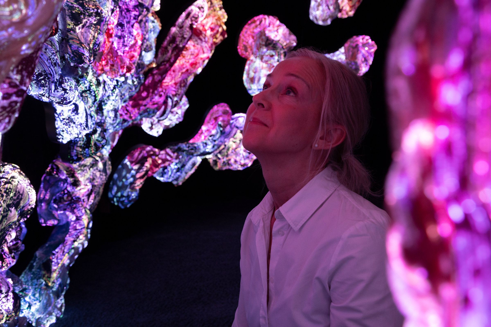
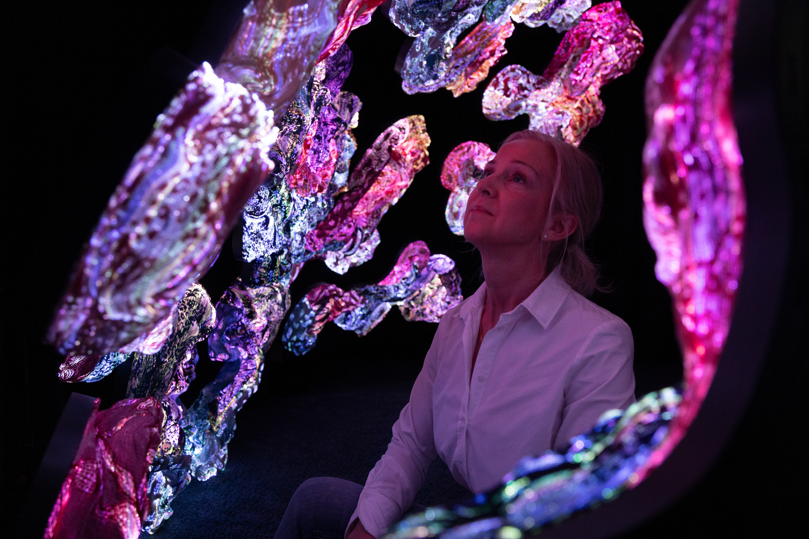
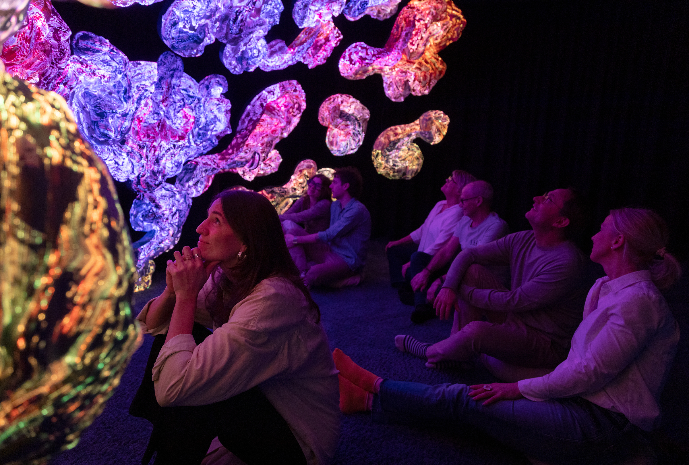

1/28andrum-visitor-gazing-pink-light.jpg
orig: _94A3950-mid.jpg
| sv | Besökare i vit skjorta blickar upp mot rosa och lila lysande textilskulpturer i ANDETAGs andrum. |
| en | Visitor in a white shirt looking up at pink and violet luminous textile sculptures in the ANDETAG breathing hall. |
| de | Besucherin in weißem Hemd blickt zu rosa und violetten leuchtenden Textilskulpturen im ANDETAG-Atemraum auf. |

2/28andrum-visitor-among-textile-sculptures.jpg
orig: _94A3958-mid.jpg
| sv | Besökare omgiven av lysande textilskulpturer i rosa och lila toner i ANDETAG. |
| en | Visitor surrounded by glowing textile sculptures in pink and violet tones at ANDETAG. |
| de | Besucherin, umgeben von leuchtenden Textilskulpturen in Rosa- und Violett-Tönen bei ANDETAG. |

3/28andrum-three-visitors-warm-light.jpg
orig: _94A3961-mid.jpg
| sv | Tre besökare sitter på golvet och betraktar varma, lysande textilformer i ANDETAGs andrum. |
| en | Three visitors seated on the floor watching warm, glowing textile forms in the ANDETAG breathing hall. |
| de | Drei Besuchende sitzen am Boden und betrachten warme, leuchtende Textilformen im ANDETAG-Atemraum. |

4/28andrum-group-reclining-purple-light.jpg
orig: _94A3969-mid.jpg
| sv | Grupp av besökare lutar sig bakåt mot lysande textilkonst i lila och blå toner. |
| en | A group of visitors leaning back toward luminous textile art in purple and blue tones. |
| de | Eine Gruppe von Besuchenden lehnt sich zurück und betrachtet leuchtende Textilkunst in Violett- und Blautönen. |

5/28andrum-group-seated-hands-clasped.jpg
orig: _94A3970-mid.jpg
| sv | Besökare sitter stilla med händerna vid hakan inför lysande textilskulpturer. |
| en | Visitors sitting still with hands clasped near their chins before glowing textile sculptures. |
| de | Besuchende sitzen still mit gefalteten Händen vor leuchtenden Textilskulpturen. |

6/28andrum-visitor-portrait-soft-glow.jpg
orig: _94A3973-mid.jpg
| sv | Närbild av leende besökare som blickar upp i ANDETAGs dämpade ljus. |
| en | Close-up of a smiling visitor looking upward in ANDETAG's dim glow. |
| de | Nahaufnahme einer lächelnden Besucherin, die im gedämpften Licht von ANDETAG nach oben blickt. |

7/28andrum-visitor-looking-up-warm-sculptures.jpg
orig: _94A3975-mid.jpg
| sv | Man i vit t-shirt sitter på golvet och blickar upp mot varma lysande textilskulpturer. |
| en | Man in a white t-shirt seated on the floor, looking up at warm luminous textile sculptures. |
| de | Mann in weißem T-Shirt sitzt am Boden und blickt zu warmen leuchtenden Textilskulpturen auf. |

8/28andrum-overhead-visitors-resting.jpg
orig: _94A3984-mid.jpg
| sv | Översikt där besökare vilar bland lysande textilkonst i ANDETAGs andrum. |
| en | Overhead view of visitors resting among luminous textile art in the ANDETAG breathing hall. |
| de | Überblick über Besuchende, die zwischen leuchtender Textilkunst im ANDETAG-Atemraum ruhen. |

9/28andrum-visitor-profile-blue-sculptures.jpg
orig: _94A3989-mid.jpg
| sv | Besökare i profil badar i blått ljus från omgivande textilskulpturer. |
| en | Visitor in profile bathed in blue light from surrounding textile sculptures. |
| de | Besucher im Profil, in blaues Licht umliegender Textilskulpturen getaucht. |

10/28andrum-visitor-blue-glow-forms.jpg
orig: _94A3991-mid.jpg
| sv | Lugn besökare i blått ljus med lysande textilformer som svävar omkring. |
| en | Calm visitor in blue light, luminous textile forms floating around. |
| de | Ruhiger Besucher in blauem Licht, umgeben von schwebenden leuchtenden Textilformen. |

11/28andrum-wall-of-light-four-visitors.jpg
orig: _94A4012-mid.jpg
| sv | Fyra besökare sitter tillsammans framför en stor vägg av lysande textilskulpturer i ANDETAG. |
| en | Four visitors seated together before a large wall of luminous textile sculptures at ANDETAG. |
| de | Vier Besuchende sitzen zusammen vor einer großen Wand aus leuchtenden Textilskulpturen bei ANDETAG. |

12/28andrum-five-visitors-lying-ceiling-light.jpg
orig: _94A4018-mid.jpg
| sv | Fem besökare ligger ner på golvet och blickar upp mot ett tak av lysande textilkonst. |
| en | Five visitors lying on the floor looking up at a ceiling of luminous textile art. |
| de | Fünf Besuchende liegen am Boden und blicken zu einer Decke aus leuchtender Textilkunst hinauf. |

13/28andrum-visitors-on-pillows-suspended-art.jpg
orig: _94A4027-mid.jpg
| sv | Besökare vilar på kuddar under svävande, lysande textilskulpturer. |
| en | Visitors resting on pillows beneath floating, luminous textile sculptures. |
| de | Besuchende ruhen auf Kissen unter schwebenden, leuchtenden Textilskulpturen. |

14/28andrum-wide-hall-visitors-resting.jpg
orig: _94A4040-mid.jpg
| sv | Översikt av ANDETAGs andrum med besökare som ligger ner framför en lysande textilväggsinstallation. |
| en | Wide view of the ANDETAG breathing hall, visitors lying before a luminous textile wall installation. |
| de | Weite Sicht in den ANDETAG-Atemraum mit Besuchenden vor einer leuchtenden Textilwandinstallation. |

15/28andrum-hall-visitors-at-rest.jpg
orig: _94A4042-mid.jpg
| sv | Besökare vilar stilla i ANDETAGs andrum framför en vägg av lysande textilformer. |
| en | Visitors at rest in the ANDETAG breathing hall before a wall of luminous textile forms. |
| de | Besuchende ruhen im ANDETAG-Atemraum vor einer Wand aus leuchtenden Textilformen. |

16/28corridor-lounge-illuminated-sculptures.jpg
orig: _94A4049-mid.jpg
| sv | Besökare samtalar i en korridor med orange fåtöljer och väggmonterade lysande textilskulpturer. |
| en | Visitors conversing in a corridor with orange armchairs and wall-mounted luminous textile sculptures. |
| de | Besuchende unterhalten sich in einem Gang mit orangefarbenen Sesseln und leuchtenden Textilskulpturen an den Wänden. |

17/28corridor-visitors-walking-past-sculptures.jpg
orig: _94A4059-mid.jpg
| sv | Par går genom korridor med belysta textilverk i blått och rött på väggarna. |
| en | A couple walking through a corridor with blue and red illuminated textile works on the walls. |
| de | Ein Paar geht durch einen Gang mit blau und rot beleuchteten Textilwerken an den Wänden. |

18/28entrance-storefront-passageway.jpg
orig: _94A4076-mid.jpg
| sv | ANDETAGs entré i en gångpassage med glasfasad och skylten ANDETAG Malin & Gustaf Tadaa. |
| en | The ANDETAG entrance in a pedestrian passage with glass facade and the sign ANDETAG Malin & Gustaf Tadaa. |
| de | Der ANDETAG-Eingang in einer Fußgängerpassage mit Glasfassade und dem Schriftzug ANDETAG Malin & Gustaf Tadaa. |

19/28reception-flowers-and-welcome.jpg
orig: _94A4086-mid.jpg
| sv | Värd i svart hälsar besökare vid en reception med en stor blombukett och inramade textilverk på väggen. |
| en | Host in black greeting a visitor at a reception with a large bouquet and framed textile works on the wall. |
| de | Gastgeberin in Schwarz begrüßt einen Gast am Empfang mit großem Blumenstrauß und gerahmten Textilwerken. |

20/28reception-lobby-with-sculpture.jpg
orig: _94A4095-mid.jpg
| sv | Foajé med inramade textilverk, soffa med besökare och en stor väggskulptur i ANDETAG. |
| en | Lobby with framed textile works, a sofa with visitors, and a large wall sculpture at ANDETAG. |
| de | Foyer mit gerahmten Textilwerken, einem Sofa mit Besuchenden und einer großen Wandskulptur bei ANDETAG. |

21/28lockers-visitors-preparing.jpg
orig: _94A4099-mid.jpg
| sv | Besökare lägger undan sina saker i rosa skåp bredvid en soffa och textilskulptur i ANDETAG. |
| en | Visitors storing their belongings in pink lockers next to a sofa and textile sculpture at ANDETAG. |
| de | Besuchende verstauen ihre Sachen in rosafarbenen Schließfächern neben Sofa und Textilskulptur bei ANDETAG. |

22/28lockers-guests-hanging-coats.jpg
orig: _94A4111-mid.jpg
| sv | Besökare hänger av sig rockar och packar ned saker i ANDETAGs rosa skåp inför andrumet. |
| en | Visitors hanging up coats and stowing belongings in ANDETAG's pink lockers before entering the breathing hall. |
| de | Besuchende hängen Mäntel auf und verstauen Sachen in den rosafarbenen ANDETAG-Schließfächern vor dem Atemraum. |

23/28gallery-visitors-among-sculptures.jpg
orig: _94A4128-mid.jpg
| sv | Besökare rör sig genom galleri med textila väggskulpturer upplysta av spotlights. |
| en | Visitors moving through a gallery with textile wall sculptures lit by spotlights. |
| de | Besuchende gehen durch eine Galerie mit textilen Wandskulpturen im Licht von Spotlights. |

24/28gallery-two-visitors-studying-sculpture.jpg
orig: _94A4129-mid.jpg
| sv | Två besökare studerar en detaljerad textil väggskulptur i blått och orange. |
| en | Two visitors studying a detailed textile wall sculpture in blue and orange. |
| de | Zwei Besucherinnen betrachten eine detaillierte textile Wandskulptur in Blau und Orange. |

25/28gallery-visitors-close-up-textile-art.jpg
orig: _94A4131-mid.jpg
| sv | Närbild av två besökare i samtal framför textila skulpturer i ANDETAGs galleri. |
| en | Close-up of two visitors in conversation before textile sculptures in the ANDETAG gallery. |
| de | Nahaufnahme zweier Besucherinnen im Gespräch vor Textilskulpturen in der ANDETAG-Galerie. |

26/28gallery-visitors-admiring-iridescent-work.jpg
orig: _94A4138-mid.jpg
| sv | Två besökare betraktar en skimrande textilskulptur i lila, guld och grönt. |
| en | Two visitors contemplating a shimmering textile sculpture in violet, gold, and green. |
| de | Zwei Besucherinnen betrachten eine schimmernde Textilskulptur in Violett, Gold und Grün. |

27/28gallery-info-panel-and-visitors.jpg
orig: _94A4146-mid.jpg
| sv | Galleri med ANDETAGs infotext på väggen och besökare som betraktar textilverk. |
| en | Gallery with the ANDETAG info panel on the wall and visitors viewing textile works. |
| de | Galerie mit dem ANDETAG-Infoschild an der Wand und Besuchenden vor Textilwerken. |

28/28gallery-visitor-on-bench-contemplation.jpg
orig: _94A4151-mid.jpg
| sv | Besökare sitter ensam på en bänk och betraktar en textilskulptur på väggen. |
| en | A lone visitor sits on a bench, contemplating a textile sculpture on the wall. |
| de | Eine Besucherin sitzt allein auf einer Bank und betrachtet eine Textilskulptur an der Wand. |